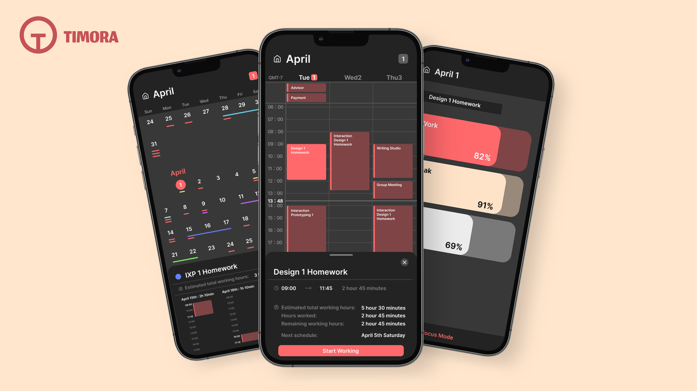
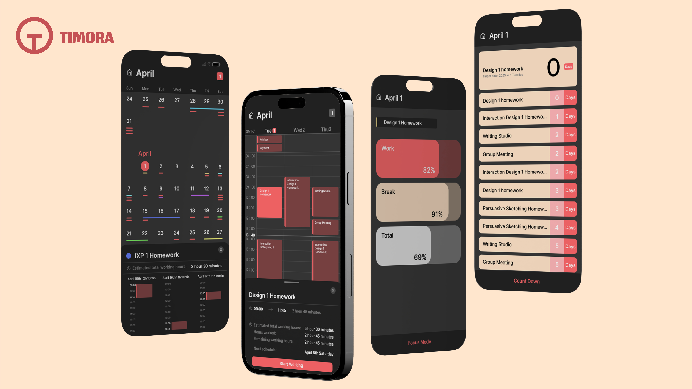

Planning System
Designed a scheduling experience that combines daily reminders, countdowns, and both short- and long-term calendar views to help students understand what matters now and what is coming next.

An academic planning app designed to help students manage study routines, deadlines, and progress with more clarity, structure, and confidence.
TIMORA is a student-focused planning app that empowers students to take control of their academic journey with more clarity and confidence. The project was designed to make planning, scheduling, and studying feel more manageable rather than overwhelming.
The app integrates smart scheduling tools, a focused study mode, daily reminders, short- and long-term calendars, countdowns for key deadlines, personalized progress tracking, and AI-driven grade predictions based on work hours. I designed the full UI in Figma as a complete product experience across multiple screens and states.



Designed a scheduling experience that combines daily reminders, countdowns, and both short- and long-term calendar views to help students understand what matters now and what is coming next.
Built a focused study mode that supports concentration and routine-building through clearer timing, study awareness, and a more structured daily workflow.
Integrated progress tracking and AI-driven grade prediction to make academic performance feel more legible, motivating, and actionable over time.
This project started from the challenge many students face when balancing assignments, study sessions, deadlines, and long-term academic goals. Instead of treating planning as a static checklist, I designed TIMORA as a more supportive system that combines organization, motivation, and feedback.
Using Figma, I designed the full UI across multiple pages and states to create a cohesive product direction. The final result focuses on making academic planning feel seamless: students can see deadlines clearly, maintain study momentum, and better understand how effort may influence outcomes over time.